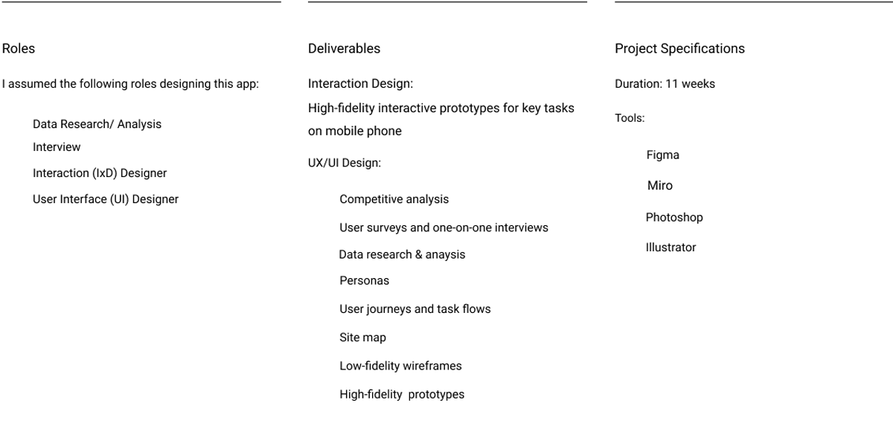
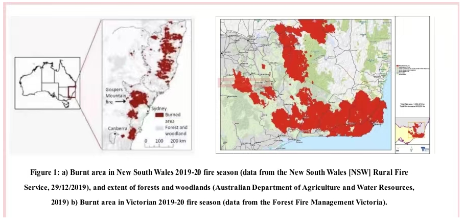
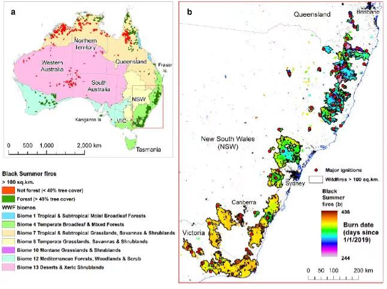
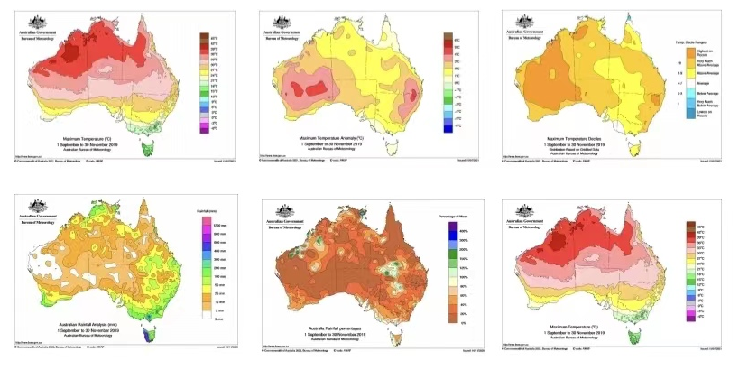
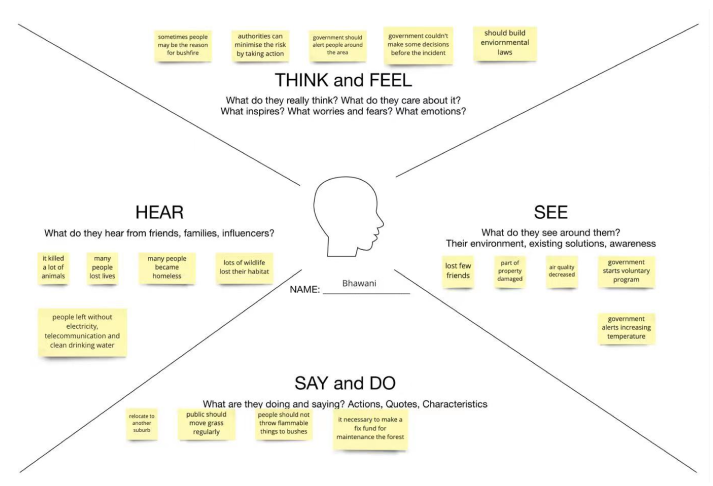
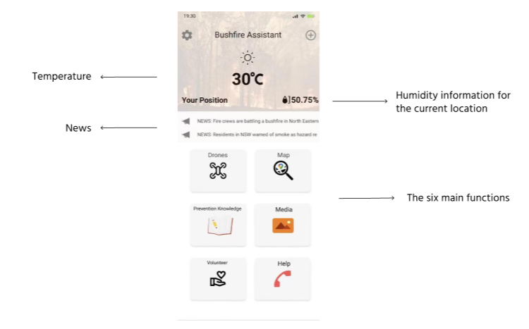
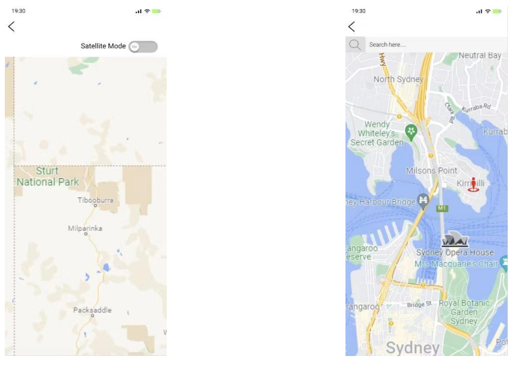
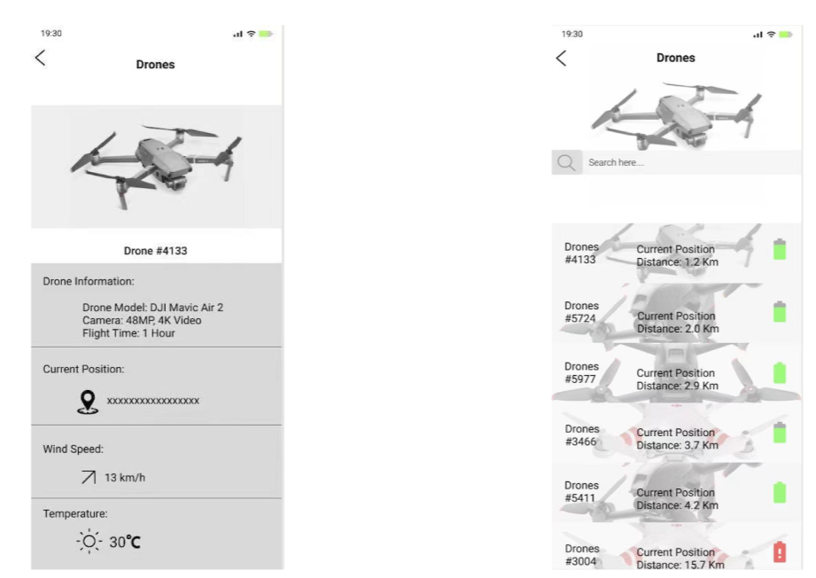
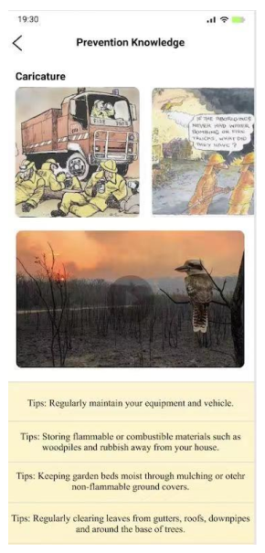

Noah
Noah
Bushfire Assistant is a mobile platform to ensure the bushfire safety
and improve awareness of residents and travelers.
View Promote Video
From research and ideation to Ul and implementation, we designed Bushfile Assistant to ensure the safety of users near the forest and reduce property losses. The project uses a drone early warning system to provide early warning and real-time monitoring of fires in early or smaller areas, and to be able to monitor the trend of the fire spread and the fire. The spread direction is accurately warned, ln addition, the project also provides a safe escape route for residents and travelers near the fire and shows the location of rescue vehicles on the map.
The bushfire has become one of the most serious disasters to Australia’s environment and economy. The 2019/2020 bushfires were among the worst in Australia there were more than 400 deaths, of which 33 people including 9 firefighters died directly from bushfire and 417 died from inhalation of excessive smoke.More than 3.000 houses and more than 7000 facilities and buildings were destroved At the same time, more than 10 million hectares of land were burned and 10000 stocks were lost. Nearly 80% of the Australian people were directly or indirectly affected by this bushfire. In January 2020 the Australian capital Canberra’s air quality index became one of the worst cities in time (Norman et al. 2021). As part of a team proiect my team andhope to address this issue and raise awareness of how individuals can contribute to enhanced impact on the fire environment through fire comics.
Figure 1 shows the burned area in New South Wales and Victoria during the fire season from 2019 to 2020. In the iqure, we can see that in a fire, forests and woodlands are more likely to be eroded by the fire, and more likely to become disaster-stricken areas.
in the bushfires from 2019 to 2020, the entire western and eastern parts of Australia have been severely offectec Except for the Northern Territory, which was not affected, all other states had forest damages albove 40%. Among them, Australian Capital Territory, New South Wales, Victoria and Oueensland all have forests affected by more than 90% of disasters.(Figure 2)
Figure 4 shows the area of land eroded by fires accumulated by the annual unit (Figure 4 a), and the number of fires counted by the annual unit (Figure 4b). We can clearly see that in Australia in 2020 The fire, both in the scope of influence and the number of occurrences, is the largest in history.
The six graphs in the fiqure 5 show a series of statistics on Australicd's temperature and rainfall from September to November 2019 it is worth noting that the abnormal temperature changes shown in the second picture, combined with the rainfall distribution shown in the other pictures,we can conclude that Black Summer fires have largely affected the weather conditions in the same place
Created from interviews, secondary research and data analysis, the empathy map helped contextualize future users' encounters with Bushfire Assistant.
Using an empathy map assists me in aking demographic and psychographic decisions that affect the persona, brand and overal design
Interaction Design
After researching and analyzing design patterns that fit the information architecture, business goals, and user needs we sketched solutions.Using rapid-prototyping and Miro to move forward thoughts and ideas, We focused mainly on meeting the How Might We in an iterative process. We from sketches to wireframing solutions and screens via Figma.
The Main page mainly shows the six main functions of "Bushfire Assistant", including Drones, Map, Prevention knowledge, media, volunteer and help. Secondly, it will also provide users with temperature and humidity information at the current location, and some news will also appear on the main page for users to browse.
The map can help users view the fire situation at the current location, and users can view the fire situation at the location they want to know through the search function. In addition, there is also a satellite function that can do fire warning and display fire information more clearly on the map.
The main function of Drones is fire warning and warning to users. Secondly, it will also assist the other functions described above to ensure that other functions can work normally, for example, the temperature and humiditv information on the homepage is provided bv Drones
This function allows users to understand the knowledge of fire prevention through rich animation content and fire prevention tips. Some fire videos make users feel the fear of fire and have a sense of awe so take measures to prevent fires in daily life.
Key Takeways
It was inspiring to see how each person was able to bring to the table a different perspective during the meeting sessions. Also,I approached the project with too many strong solution ideas, which in retrospect was not conductive to reasonably responding tothe research findings. My result is therefore rather an approximation and, above all, at the conceptual level requires further worke.g. to facilitate a smarter group work.
We need to gathering the data needed to represent the Australian bushfire situation. This is my first data study collecting data on bushfires.I searched a lot of Bushfire sites to find related information. Firstly, l need to collect the required data, secondly, I need to choose the right time period.
Especially as it gets more complex, Journey mapping is very helpful, on the one hand to put a comprehensive process on paper and to uncover problematic and promising points, on the other hand to provide a basis for good cooperation for all stakeholders.
Team: Shuxuan Wang / Jiarong Gu / Shicheng Wu / Weilie Wang / Yeqi Xu / Ziqian Zhang
Reference:
Norman, B., Newman, P., & Steffen, W. (2021). Apocalypse now: Australian bushfires and the future of urban settlements. Npj Urban Sustainability, 1(1). https://doi.org/10.1038/s42949-020-00013-7